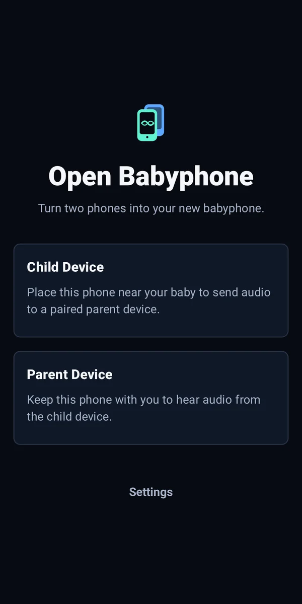
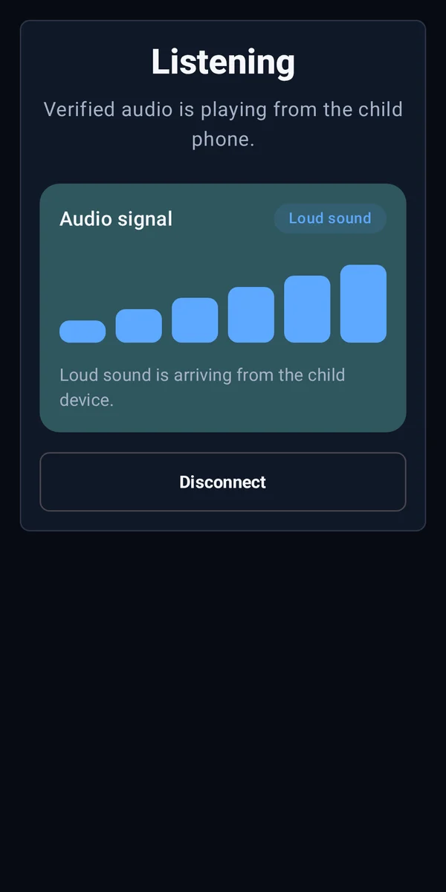

Turn two phones into your new babyphone.
Verified live audio over your local network. No account or hosted relay.
Android 11+
Open source
Local by design


Verified live audio over your local network. No account or hosted relay.

